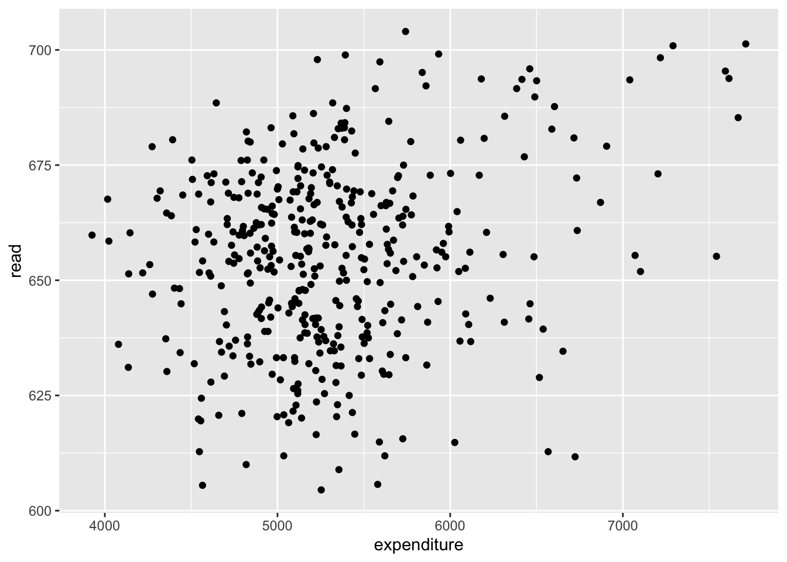
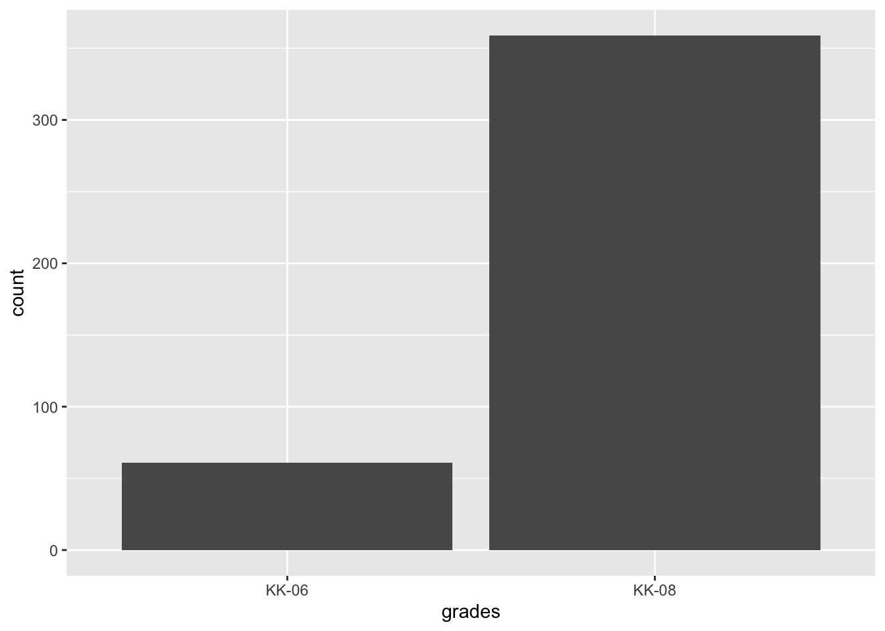
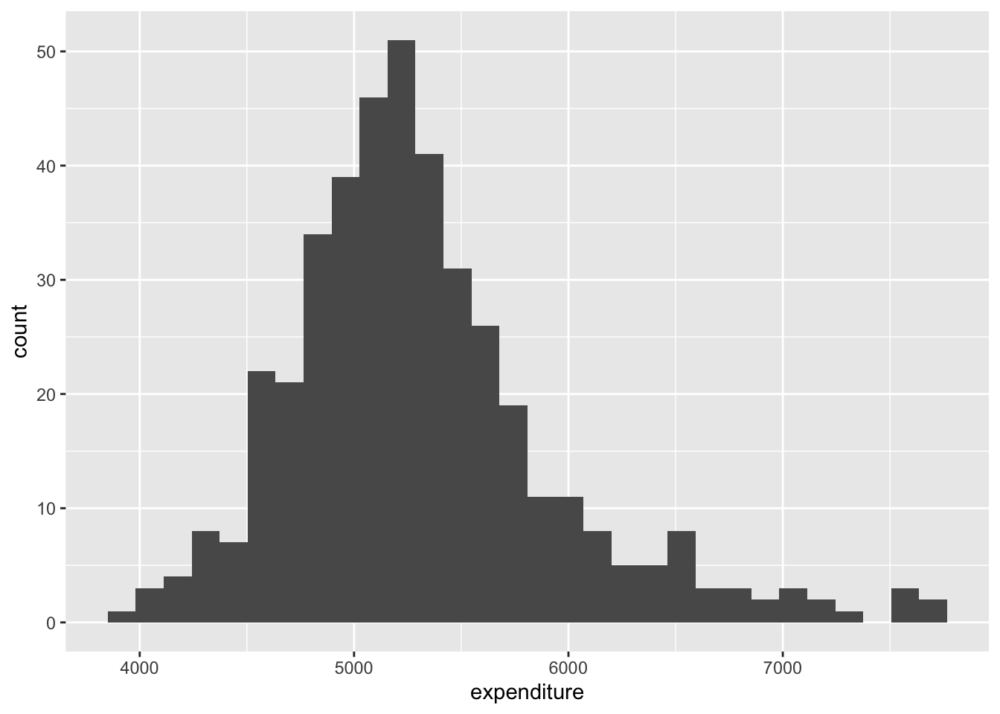
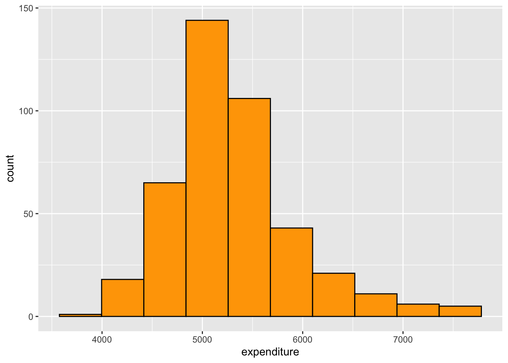
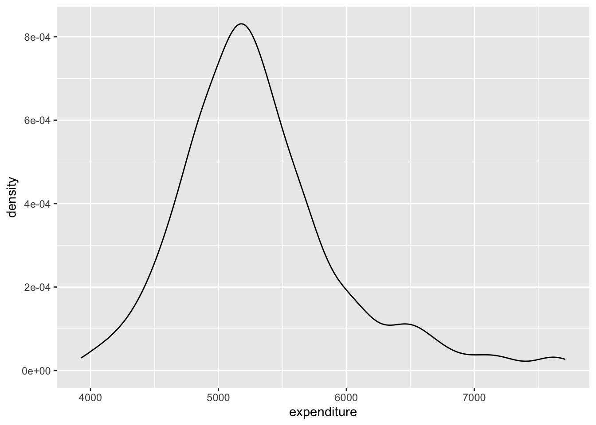
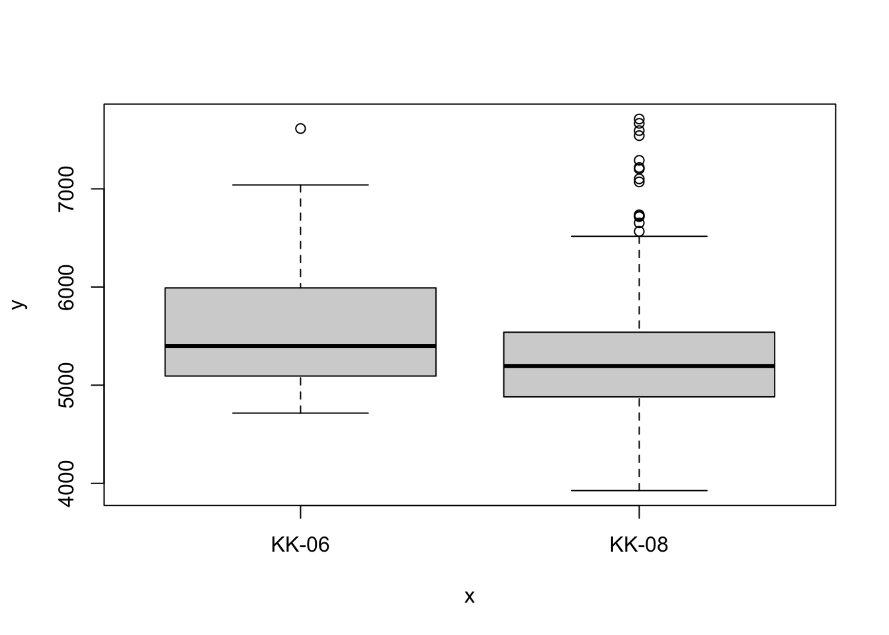
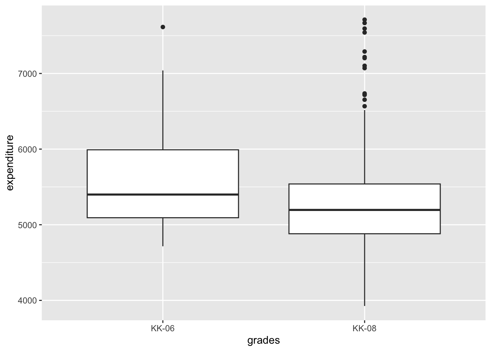
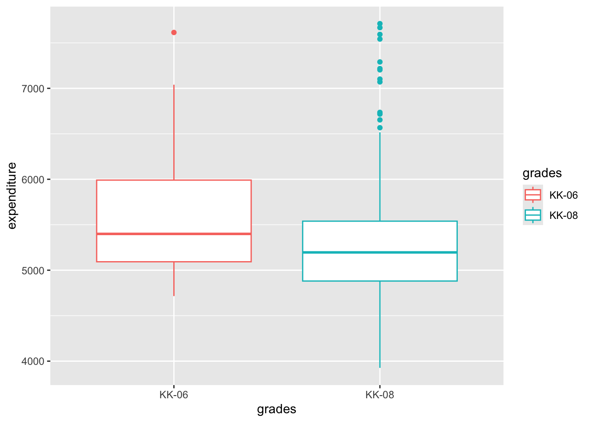
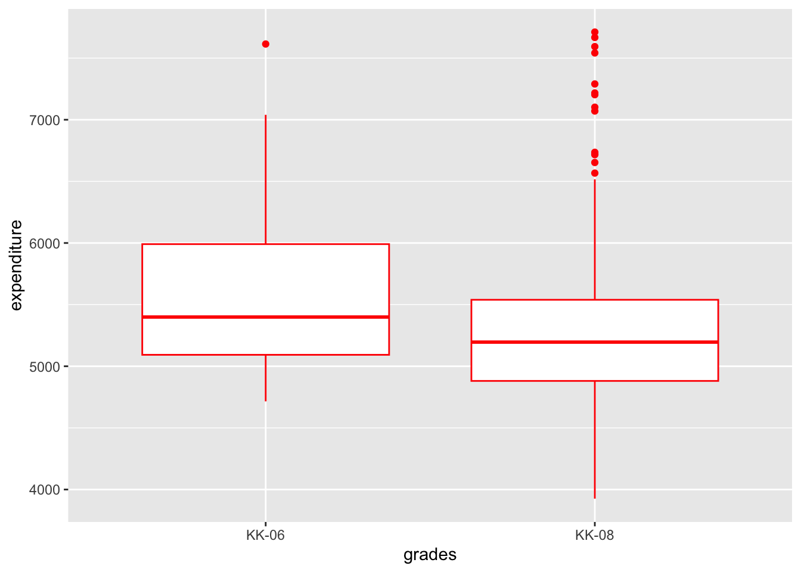

# Executable code
3+4[1] 7ST 437 Data Visualization
This is a quarto document! A quarto document (.qmd) is a special kind of file that combines code and plain text to produce polished, shareable reports and presentations. In this class we’ll use Quarto documents to record our work.
There are three main components to Quarto document:
Every Quarto document begins with the YAML header that appears inside three dashes ---. The header controls document level settings, such as the document type, the title, and the author.
We can write, store, and run code entirely within a Quarto document. Code blocks start and end with three back ticks ```. After the first set of back ticks, we indicate that we’re using R code by specifying {r}. If we don’t included {r} at the start of the code block, Quarto won’t recognize the content as code. See the two examples below.
# Not executable code
3+4# Executable code
3+4[1] 7Anything else in the document outside of the YAML header and the code blocks is interpreted as Markdown - a syntax for controlling the text of the document.
For example, to indicate a header, use #. To indicate a subheader, use ##, and so on.
For help with Markdown syntax, check out https://quarto.org/docs/authoring/markdown-basics.html.
When working in a .qmd file in RStudio, you have the option of editing your file in Source mode or Visual mode. In the top left corner of your .qmd file, take a look at both options by clicking the Source and Visual buttons. Source provides a more raw markdown format and Visual is bit more what-you-see-is-what-you-get and may be easier to navigate if this is your first time working in a Quarto document. Use whichever option you prefer!
In this lab, we’ll rely on a few functions that aren’t a part of Base R. Instead, they are dependent on a package - a collection of code, data, and documentation typically used to run more advanced functions. Here, we’ll need theggplot2 and AER packages.
You may have received a warning at the start of your .qmd file that says Package ggplot2 is required but is not installed. If you see this warning, you can easily install the package by clicking the Install option. You can also install packages using install.packages('Name of Package'). Careful! Package names are case sensitive, so install.packages(‘GGplot2’) will not work, but install.packages('ggplot2') will.
You only need to install a package once, so instead of including the code to install ggplot2 and AER as a code chunk, navigate to the Console of your RStudio window, type install.packages(c('ggplot2', 'AER')) and hit enter. Give R a moment to install the packages.
Once you have installed a package, you won’t need to install it again. You will; however, need to load any necessary packages with each new iteration of RStudio. The code chunk below loads the ggplot2 package for us.
library(ggplot2)The .qmd file is simply a static document. If we want to actually run code from the document, we need to send the code from the .qmd code block to the RStudio console.
Mac users: Use ⌘ + return to run single or highlighted line(s). Use ⌘ + shift + return to run entire code block
Windows users: Use ctrl + enter to run single or highlighted line(s). Use ctrl + shift + enter to run entire code block
# This code block stores the values
# 10 in x and 15 in y.
# Try running this code!
x <- 10
y <- 15# Now trying adding x to y. Run your code.
# By the way, this is a comment! Anything prefaced by
# the # symbol in an R code chunk won't be treated as code.Up until this point, you’ve likely been reading this document directly in your RStudio window. Typically, we want to render our Quarto documents so that they are presentable and easily shareable. If you scroll back up to the YAML, you’ll see we set the format of this document to HTML. If you need to render your document as a PDF or docx document, I recommend holding off on changing the format, until you are done editing your document. The rendering speed is much faster for HTML.
To render and preview your document, click the Render option in the horizontal menu across the top of your .qmd file. If a preview of your document does not appear in the Viewer pane on the right side of your RStudio window, click the gear icon next to the Render option and make sure Preview in Viewer Pane is selected.
To render your document to PDF, change the format option in the YAML from html to pdf.
In order to create PDFs you will need to install a recent distribution of TeX. We recommend the use of TinyTeX, which you can install by running the following command in the Terminal. To open the Terminal, select the tab just to the right of the Console below. Simply type the following three words and hit return/enter.
quarto install tinytexNow try rendering your .qmd file as a PDF.
For the remainder of this lab, we’ll use a variety of visualization techniques to explore data. If we’re interested in creating visualizations solely to get a quick-and-dirty understanding of our data, we may not need to spend a lot of time creating pretty visualizations. If that’s the case, it may be more efficient to create visualizations using R’s base graphics. If instead, we want to create visualizations to share with others, we should spend a little more time crafting nicer visualizations using the `ggplot2` package. In the following exercises, we’ll do both!
Start by loading the AER package. The dataset we’ll use for the following exercises, CASchools, is stored in this package.
library(AER)When a dataset (or function) is stored as a part of an R package, we can read more about it by opening the help documentation. Help documentation can be found by searching in the Help tab on the right-hand side of the RStudio window or by using a ? as the prefix for the object you want to learn about.
Did you notice the additional argument at the start of the code chunk above? What do you think this argument does? Hint: render your document and try to locate this code chunk.
To let R know that we want to use the CASchools, call in into your Environment by using the data() function.
data(CASchools)Next week, we’ll look at how to import and use data that aren’t already stored in an R function.
A scatterplot displays bivariate (two variables) data. For each observation in the dataset, the value of one variable is plotted on the x-axis and the other on the y-axis.
To quickly create a scatterplot, use the base R function plot() with the x-axis variable as the first argument and the y-axis variable as the second argument.
The code plot displays the expenditure and read variables from the CASchools dataset as the x- and y-axis variables, respectively.
plot(CASchools$expenditure, CASchools$read)
Using the ggplot2 package, we can create a similar, slightly tidier plot using the ggplot() function.
The first line, ggplot(), tells it to create a plot object, and the second part, geom_point(), tells it to add a layer of points to the plot.
The usual way to use ggplot() is to pass it a data frame (CASchools) and then tell it which columns to use for the x and y values as the aesthetic (aes) arguments.
ggplot(data = CASchools, aes(x = expenditure, y = read)) +
geom_point()
Take a look at the help documentation and descriptions of the variables available in this dataset. Select two other numerical variables from the CASchools dataset and create a scatterplot using the base R function
and the ggplot2 package.
Bar graphs are a handy visualization tool when we want to display the size of the categories of a categorical variable.
The base R code below uses the barplot() function to create a barplot for the grades variable. In the code chunk below, we have a function table() nested within barplot(). Try highlighting and running just the table(CASchools$grades) component of the code to see what information the barplot() function takes as input.
barplot(table(CASchools$grades))
We can create a similar plot using the ggplot() function by setting grades as the x aesthetic and then adding the geom_bar() layer.
ggplot(data = CASchools, aes(x = grades)) +
geom_bar()
The county variable is another categorical variable in this dataset that might lend itself nicely to a barplot. Using the same ggplot structure as we did above, create a barplot for the county variable.
Because there are 45 different counties present in this dataset, it’s probably pretty difficult to make any meaning out of the plot. There are a lot of different formatting options we can use in ggplot2 to fix this issue. For now, we’ll just opt for the quick fix of flipping the axes in the plot. Create a barplot using the ggplot() functions so that county is a y aesthetic instead of x.
A histogram is useful for visualizing the distribution of a numerical variable. Each recorded value is placed in a bin and the bins are displayed as bars where the height of each bar corresponds to the number of observations within the bin.
The base R function hist() takes a single numerical variable as its only required argument. The code below creates a histogram of the expenditure variable.
hist(CASchools$expenditure)
Again, we can create a similar, yet slightly more presentable version of the plot using the ggplot() function and the geom_histogram() layer.
ggplot(data = CASchools, aes(x = expenditure)) +
geom_histogram()
Let’s start to take advantage of the some of the nicer plotting features that the ggplot2 package offers. We can specify some formatting options, such as outline color, fill color, and number of bins, specific to the geom_histogram() layer.
ggplot(data = CASchools, aes(x = expenditure)) +
geom_histogram(bins = 10, color = "black", fill = "orange")
Take a look at the help documentation and descriptions of the variables available in this dataset. Select a different numerical variable from the CASchools dataset and create a histogram of the data using the base R function
and the ggplot2 package. Customize your histogram by adjusting the number of bins and the outline and fill colors.
A density plot is an alternative visualization to a histogram and can be particularly useful when the numerical variable we’re interested in is continuous. It is a smooth version of the histogram that uses something called the kernel density estimate to create the curve. We won’t get into get into how the kernel density estimate is determined in this class, but if you’d like to read more, you’re welcome to.
We can use the density() function nested within the plot() function to create a density plot of the expenditure variable.
plot(density(CASchools$expenditure))
Better yet, we can use the ggplot() and the geom_density() layer.
ggplot(data = CASchools, aes(x = expenditure)) +
geom_density()
Select a different numerical variable from the CASchools dataset and create a density plot using the base R function
and the ggplot2 package.
The last type of basic plot we’ll look at in this lab is a boxplot. Boxplots, also used to displayed numerical data, can be useful for displaying a number of summary statistics. Read more about boxplots here.
boxplot(CASchools$expenditure)
ggplot(data = CASchools, aes(y = expenditure)) +
geom_boxplot()
Boxplots can be especially useful when we want to compare the distributions of some numerical variable for multiple categorical variables.
The chunks of code below create side-by-side boxplots of the expenditure variable for each grade category, using the base R and ggplot2 functions, respectively.
plot(CASchools$grades, CASchools$expenditure)
ggplot(data = CASchools, aes(x = grades, y = expenditure)) +
geom_boxplot()
Earlier, we saw how to add customization arguments (e.g. fill and color) to change features of the entire plot. We may also want to customize our plot based on variables within our visualization. This is where aesthetic mappings comes into play. Let’s map the grades variable to color. To do this, we must specify color = grades within the aesthetic function inside the geom_boxplot layer.
ggplot(data = CASchools, aes(x = grades, y = expenditure)) +
geom_boxplot(aes(color = grades))
Compare how mapping grades to the color argument within the aes() function creates a different plot than specifying a specific color outside the aes() function.
ggplot(data = CASchools, aes(x = grades, y = expenditure)) +
geom_boxplot(color = "red")
Select a different numerical variable from the CASchools dataset and create side-by-side boxplots of the data grouped by the grades variable using the base R function
and the ggplot2 package.
We’ve now seen how to create a number of plot types using both base R functions and the ggplot2 package. You may have noticed that there is quite a bit of inconsistency in the syntax used to create the base R plots. Base R plots are useful if you just want to look at your data quickly and you already have the code committed to memory. The ggplot2 functions, on the other hand, all follow the same consistent structure. The layering technique we saw in each of the ggplot examples will allow us to easily customize and fine tune the visualizations we create throughout this course. All of the plots that you submit in this course will need to be created using the ggplot2 package, unless specified otherwise, so if you’re looking to commit one of these plotting techniques to memory, focus on the family of ggplot() functions.